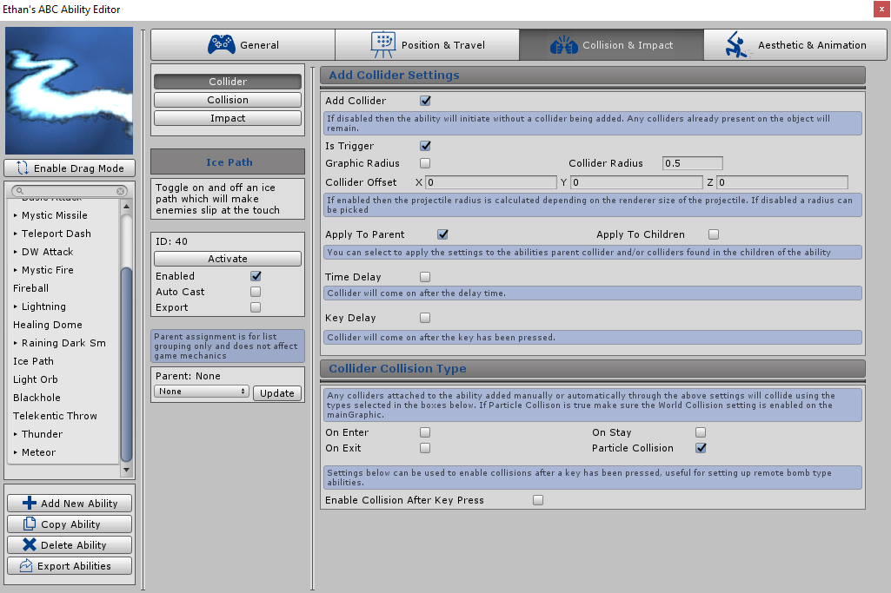

Collider
Overview
This section of the editor determines if a collider should be added to the ability, the collider can be added through different ways like a time delay or after a input trigger. You can also determine the radius and how it collides (on enter, on stay etc). If you rather use your own collider then this can be disabled

Add Collider
If disabled then the ability will initiate without a collider being added. Any colliders already present on the ability (through the graphic object) will remain. If enabled then a collider will be added inheriting the settings defined below.
Disable this if you want to add your own custom collider which differs from the ABC sphere collider.
Is Trigger
If ticked then the abilities added collider will be set as a trigger. Refer to Unity documentation on the difference between the trigger flag being enabled/disabled.
Graphic Radius
If enabled then the radius of the added collider will be automatically determined by the ability graphic used. This should set the abilities collider to the radius of the graphic.
Collider Radius
Sets the radius of the abilities added collider.
Collider Offset
Sets the offset of the added collider with XYZ values, where the collider will be position on the ability. This will move the collider from the original transform point. I.e adding a value into the X box will move the collider up the ability.
Apply To Parent
If enabled then a collider configured with the settings defined will be added to the main ability (parent) object. If disabled the collider will not be added to the parent object.
Apply To Children
If enabled then a collider configured with the settings defined will be added to every child object of the ability. If disabled the collider will not be added to the child objects.
This might be used in the scenario that you have a rock throwing ability, you will want to attach a collider to each child ‘rock’ graphic for collision and not the empty parent which sits in the middle as the child rocks origin point.
Time Delay
If ticked then the collider will be enabled after a set delay. Once ticked the following setting will appear:
-
Time
-
Sets the delay before the collider is added
Key Delay
If ticked then the collider will be enabled after a key/button trigger. Once ticked the following settings will appear:
-
Input Type
-
The type of input expected to trigger the collider enable event, either a hardcoded key can be inserted
or a button string which links to the same string setup in the Unity Input Manager.
-
Input Cancel Key (If ‘Key’ Input Type is selected)
-
A key can be selected from Unity’s predefined drop down. This key is hardcoded.
-
Input Cancel Button (If ‘Button’ Input Type is selected)
-
A string can be entered which should match the same string setup in the Unity Input Manager.
This method allows the end user to configure inputs as per Unity functionality.
Collider Collision Type
Any colliders attached to the ability added manually or automatically by the ABC system can be configured to collide using the following types: On Enter, On Exit, On Stay, On Particle Collision. Ticking the boxes will enable the collision type for the ability.
Tip: If “Particle Collision” is ticked make sure the “World Collision” setting is enabled on the main graphic.
Enable Collision After Key Press
If enabled then the ability will not process ABC collisions until a key/button has been triggered. This does not disable colliders but will instead not run ABC collision code until the trigger has been pressed by the player. Not running collision code means for example that abilities will not apply effects, be destroyed or initiate other events which occur when the ability collides with another object.
This is useful for remote bomb type abilities that can be initiated in game which then explodes at a later date when the player triggers a key/button afflicting damage to enemies near. If enabled the following settings will appear:
-
Input Type
-
The type of input expected to enable the abilities ABC collision, either a hardcoded key can be inserted or a
button string which links to the same string setup in the Unity Input Manager.
-
Input Cancel Key (If ‘Key’ Input Type is selected)
-
A key can be selected from Unity’s predefined drop down. This key is hardcoded.
-
Input Cancel Button (If ‘Button’ Input Type is selected)
-
A string can be entered which should match the same string setup in the Unity Input Manager. This method allows the end user to configure inputs as per Unity functionality.